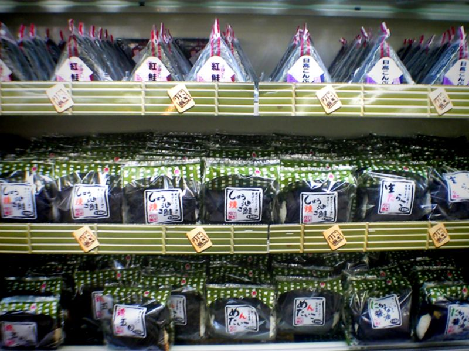

便利商店的飯糰包裝，為什麼要分成好幾片？
塑膠膜不只隔開海苔與飯，還要在你拉開時退出兩者之間；一道早餐裡的材料、幾何與取捨。
三角飯糰上的 1、2、3 看起來只是拆封說明。真正難的卻不是把包裝撕掉，而是先讓飯與海苔互不接觸，等到最後一刻再把海苔完整留在飯上。若膜抽不乾淨、飯糰被拉走，或海苔跟著裂開，隔離做得再成功，入口前的最後一步還是失敗。這層薄膜先保護食物，再讓消費者親手完成最後的包覆。

一、要保留的口感，來自暫時不要接觸
飯含有水分，海苔若長時間貼著飯，就很難維持剛烘烤後的乾脆。三角飯糰包裝中的內膜，把飯與海苔暫時隔開，讓海苔在拆封前保留乾脆口感[1]。
也不必把「濕海苔」當作一律失敗的產品。直包海苔的飯糰本來就追求另一種質地。需要設計的是商品想交付哪種體驗：若目標是拆封時仍脆，隔離就有意義；若目標是柔軟貼合，消除所有接觸反而不是目的。要怎麼包，仍得回到人們想吃到的口感。
二、外膜和內膜，為什麼不能只是一個袋子
若用普通袋子把飯和海苔一起裝起來，它能隔開外界，卻不能隔開袋內兩種材料。反過來，把海苔另裝一包雖然可以分離，吃之前又要自己把飯攤開來包。三角包裝想同時保留隔離與攜帶便利，才需要一種能在不拆散飯糰的情況下抽出的結構。
公開的日本實用新案 JPH1148U，描述了一個具體設計：外膜與左右兩片內膜結合，兩片內膜在中央重疊，周邊部分熱接合，海苔夾在外膜與內膜之間，飯則放在內膜的另一側。在這項設計中，飯、海苔與薄膜各有自己的位置。
關鍵在於「一開始分開，拆封後要能退出」。左右兩片不是隨意增加層數，而是讓中央撕開之後，每一側的外膜可以帶著相應內膜一起抽走，海苔則留在飯外。隔離功能與拆封路徑，在製造時就已經綁在一起。
三、1、2、3 其實是一段狀態轉換
第一步拉掉中央開封帶，先把外層切成左右兩半。第二、三步分別抽出兩側包膜，逐步移除飯與海苔間的隔層。nippon.com 的操作說明也提醒，抽側膜時要避免把飯從海苔中拉出。也就是說，包裝在拆的過程中，還得暫時幫忙固定食物。
這和剪開一個密封袋不同。密封袋只須開出入口；這套包裝則要讓撕裂沿預定路線前進，抽離時盡量不把脆弱海苔帶走。使用者的動作方向、薄膜的接合位置與可撕開的線，必須互相配合，才能把最終組裝交給一雙不需要看圖紙的手。
四、薄膜重疊，曾經也是拆不開的原因
同一件實用新案的背景說明，指出舊設計在折角重疊處會有雙層強度，中央開封帶可能被阻擋，甚至中途斷掉。它提出的改進，是在特定位置安排切口與導向撕裂的痕線，讓裂口能接續通過重疊處。申請人因而把問題指向重疊處的強度與撕裂路徑。
這個細節讓「好拆」不再只是一句讚美。包裝在運送時要夠牢，吃的時候又得在指定位置容易裂開；同一塊材料的強度，同時是優點與障礙。若只是把所有地方都變薄，運送時可能就不夠牢；若只是加強所有接合，可能讓最後那一拉更困難。設計工作是在不同階段分配強度，不是單純越堅固越好。
五、發明一種包法，和形成一個市場，是不同歷史
便利商店飯糰的上市，和今天包裝形式的定型，不能當成同一個時間點。nippon.com 記載 7-Eleven 於 1976 年開始研究、兩年後推出；東洋經濟的品牌工作室文章則把 1978 年描述為飯與海苔分離包裝的重要轉折，接著列出 1984 年另一種抽膜形式。後者有 AD 標記，是企業協作內容，不能當作獨立研究替企業的完整創新史背書。
因此，某個上市年不宜直接當成所有三角包裝唯一的發明日。可確認的層次是：企業逐步把飯、海苔、包材及大量製造整合成商品；公開技術文件則顯示，拆封與折角等看似細微的問題，之後仍持續被改良。消費者熟悉的 1、2、3，是很多次局部設計累積出的使用介面，不能只用一個年份交代。
六、把膜抽掉之後，還剩下一個材料問題
保留乾脆要付出包材。日本 7-Eleven 在 2023 年公告，以增加生質原料及薄膜減薄等方式，相對 2013 年基準，讓每張手卷飯糰包材的「石油來源塑膠」用量減少約 30%。這個比例計算的是每張包材中的石油來源塑膠。總材料用量、廢棄物與碳排，則各有不同的計算範圍。
包材減量也帶出了下一個問題：包材能否在維持隔離、機器包裝及拆封功能的同時減量？需要比較的還包括食物耗損、材料來源與處理方式，若沒有完整生命週期評估，就不宜替不同包法排出環保名次。
一張包裝成功之處，在於讓不同狀態順序發生：製造時接合、運送時保護、保存時隔離、吃之前退出。它也留下尚未完成的問題：當方便與脆口都已成為日常期待，我們願意重新調整哪一部分，換取更少的材料？
查證資料來源5 項
保留本輪全文的完整來源與支持範圍；未刊審閱稿，尚未安排刊期。
延伸探討
把故事帶回自己的思考
你願意為了一種喜歡的口感、外觀或使用感，多接受多少包裝與步驟？想起一個你常買的東西：如果它換成比較省材料、卻和你習慣不同的版本，什麼會讓你願意試一次？